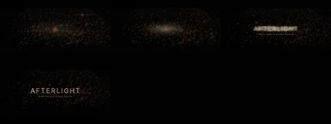
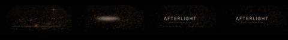
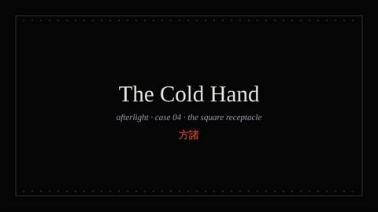
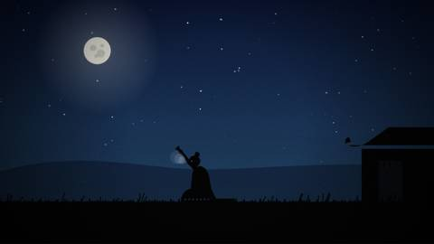
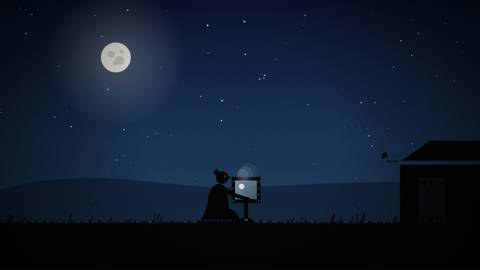
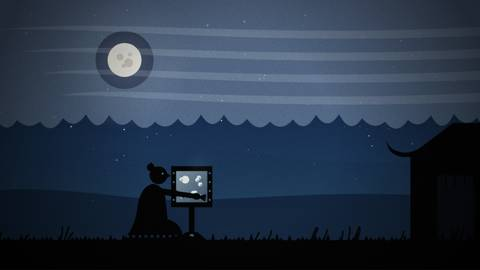
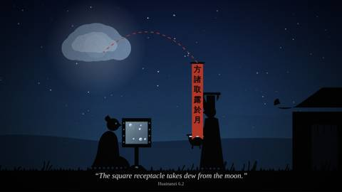
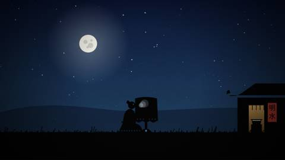

Afterlight / IV Trailer / AFL-11
IV · Trailer · AFL-11 of 21 · 1:18
Light Alone
The note that produced it
“The animations we currently have don’t correspond and the words we use are sort of meaningless.”
“Think more about this as a whole music video. The embers glowing in the wind visualizing the sound, more sound reactive to the beats … a continuous set of animations … no sense of anything but space and light and warmth.”
“Find many more archival voices or propose a Kokoro voice script to carry this, more poetic.”
What was made
Only light. A fire bed below the frame feeds one field of embers in wind that the song drives; time slows in the break and speeds in the return. A close Kokoro voice leads, archive voices answer, and each voice is drawn as a thread of light traced from its own sound.
Particle field with curl-noise wind · kick, hat and bass drive spawn and speed · oscilloscope threads
What came back
The note on this version, which produced AFL-12 The mix:
“The voices are not good.” Find the longest audio, elongate time with echo and deep warm reverb, and make each track a mosaic of its samples, “never the whole track.”
Images made while working: contact sheets, check frames, spectrograms, the stills compared before and after a fix. Tap one to see it full size.

















No separate critic agent was run on this cut. The critique came from the director, in the notes on either side of it.
On the cut before
The animations don’t correspond and the words are “sort of meaningless.” Make it react to the beat, “no sense of anything but space and light and warmth,” led by better voices or a Kokoro script.
On this cut
“The voices are not good.” Find the longest audio, elongate time with echo and deep warm reverb, and make each track a mosaic of its samples, “never the whole track.”
Files
The scripts that made this version, as plain text.
- timeline6.py35 linesthe Kokoro script and archive answers
- trailer6.py328 linesone particle field in wind, driven by the beat
- score6.py146 linesvoices, envelopes and oscilloscope traces
A film concept by Sosuke & Watson · CRASH LAB · PAELEO · CINEOSIS LAB